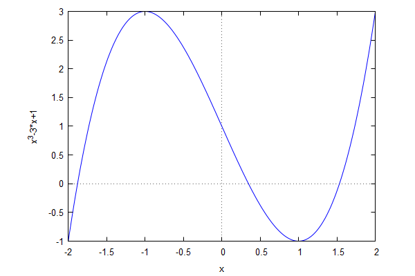
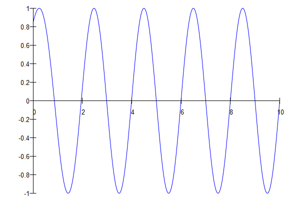
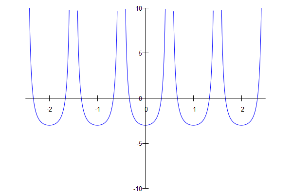

\( \DeclareMathOperator{\abs}{abs} \newcommand{\ensuremath}[1]{\mbox{$#1$}} \)
Lab sheet 2
1 Algebraic equations
| --> | f ( x ) : = 2 · x ^ 4 − 2222 · x ^ 3 + 224220 · x ^ 2 − 2222000 · x + 2000000 ; |
\[\operatorname{ }\operatorname{f}(x):=2 {{x}^{4}}-2222 {{x}^{3}}+224220 {{x}^{2}}+\left( -2222000\right) x+2000000\]
| --> | solve ( [ f ( x ) = 0 ] , [ x ] ) ; |
\[\operatorname{ }[x=10,x=1000,x=1,x=100]\]
| --> | factor ( f ( x ) ) ; |
\[\operatorname{ }2 \left( x-1000\right) \, \left( x-100\right) \, \left( x-10\right) \, \left( x-1\right) \]
| --> | y : x ^ 4 − x ^ 3 − x ^ 2 − x / 8 + 1 / 64 ; |
\[\operatorname{(y) }{{x}^{4}}-{{x}^{3}}-{{x}^{2}}-\frac{x}{8}+\frac{1}{64}\]
| --> | z : 16 · x ^ 3 − 24 · x ^ 2 − 6 · x + 2 ; |
\[\operatorname{(z) }16 {{x}^{3}}-24 {{x}^{2}}-6 x+2\]
| --> | sols : solve ( y = 0 , x ) ; |
\[\operatorname{(sols) }[x=-\frac{\sqrt{3}}{4}-\frac{\sqrt{2-\sqrt{3}}}{2}+\frac{1}{4},x=-\frac{\sqrt{3}}{4}+\frac{\sqrt{2-\sqrt{3}}}{2}+\frac{1}{4},x=-\frac{\sqrt{\sqrt{3}+2}}{2}+\frac{\sqrt{3}}{4}+\frac{1}{4},x=\frac{\sqrt{\sqrt{3}+2}}{2}+\frac{\sqrt{3}}{4}+\frac{1}{4}]\]
| --> | zvals : map ( lambda ( [ e ] , ratsimp ( subst ( e , z ) ) ) , sols ) ; |
\[\operatorname{(zvals) }[\left( -\sqrt{3}-1\right) \sqrt{2-\sqrt{3}},\sqrt{2-\sqrt{3}} \left( \sqrt{3}+1\right) ,\left( \sqrt{3}-1\right) \sqrt{\sqrt{3}+2},\left( 1-\sqrt{3}\right) \sqrt{\sqrt{3}+2}]\]
| --> | ev ( zvals , numer ) ; |
\[\operatorname{ }[-1.414213562373095,1.414213562373095,1.414213562373095,-1.414213562373095]\]
| --> | kill ( f , y , z ) $ ; |
| --> | f ( x ) : = x ^ 3 − 3 · x + 1 ; |
\[\operatorname{ }\operatorname{f}(x):={{x}^{3}}-3 x+1\]
| --> | solve ( f ( x ) = 0 ) ; |
\[\operatorname{ }[x={{\left( \frac{\sqrt{3} \% i}{2}-\frac{1}{2}\right) }^{\frac{2}{3}}}+\left( \frac{-1}{2}-\frac{\sqrt{3} \% i}{2}\right) {{\left( \frac{\sqrt{3} \% i}{2}-\frac{1}{2}\right) }^{\frac{1}{3}}},x={{\left( \frac{\sqrt{3} \% i}{2}-\frac{1}{2}\right) }^{\frac{4}{3}}}+\frac{\frac{-1}{2}-\frac{\sqrt{3} \% i}{2}}{{{\left( \frac{\sqrt{3} \% i}{2}-\frac{1}{2}\right) }^{\frac{1}{3}}}},x={{\left( \frac{\sqrt{3} \% i}{2}-\frac{1}{2}\right) }^{\frac{1}{3}}}+\frac{1}{{{\left( \frac{\sqrt{3} \% i}{2}-\frac{1}{2}\right) }^{\frac{1}{3}}}}]\]
| --> | realroots ( f ( x ) ) , float ; |
\[\operatorname{ }[x=-1.879385262727737,x=0.3472963273525238,x=1.532088905572891]\]
| --> | x0 : find_root ( f , − 2 , − 1 ) ; |
\[\operatorname{(x0) }-1.879385241571817\]
| --> | subst ( x = x0 , diff ( f ( x ) , x ) ) ; |
\[\operatorname{ }7.59626665871387\]
| --> | wxplot2d ( f ( x ) , [ x , − 2 , 2 ] ) ; |
\[\operatorname{ }\]

\[\operatorname{ }\]
| --> | kill ( f , x0 ) $ ; |
| --> | g ( x ) : = ( b ^ 2 − c ^ 2 + ( 1 + c ^ 2 ) · x ) / ( 1 − c ^ 2 + c ^ 2 · x ) ; |
\[\operatorname{ }\operatorname{g}(x):=\frac{{{b}^{2}}-{{c}^{2}}+\left( 1+{{c}^{2}}\right) x}{1-{{c}^{2}}+{{c}^{2}} x}\]
| --> | sols : solve ( g ( x ) = x , x ) ; |
\[\operatorname{(sols) }[x=-\frac{b-c}{c},x=\frac{c+b}{c}]\]
| --> | g00 : subst ( c = 0 , g ( x ) ) ; g0 ( x ) : = ' ' g00 ; |
\[\operatorname{(g00) }x+{{b}^{2}}\]
\[\operatorname{ }\operatorname{g0}(x):=x+{{b}^{2}}\]
| --> | solve ( g0 ( x ) = x , x ) ; |
\[\operatorname{ }[]\]
| --> | g10 : subst ( b = 0 , g0 ( x ) ) ; g1 ( x ) : = ' ' g10 ; |
\[\operatorname{(g10) }x\]
\[\operatorname{ }\operatorname{g1}(x):=x\]
| --> | solve ( g1 ( x ) = x , x ) ; |
\[\operatorname{ }\ensuremath{\mathrm{all}}\]
| --> | kill ( g , g00 , g0 , g10 , g1 ) $ ; |
2 Approximate solutions
| --> | f ( x ) : = sin ( %pi · x + exp ( − x ) ) ; |
\[\operatorname{ }\operatorname{f}(x):=\sin{\left( \ensuremath{\pi} x+\operatorname{exp}\left( -x\right) \right) }\]
| --> | solve ( f ( x ) = 0 , x ) ; |
\[\]\[solve: using arc-trig functions to get a solution. \]\[Some solutions will be lost.\]
\[\operatorname{ }[x=-\frac{{{\% e}^{-x}}}{\ensuremath{\pi} }]\]
| --> | wxplot2d ( f ( x ) , [ x , 0 , 10 ] , [ box , false ] , [ axes , solid ] ) ; |
\[\operatorname{ }\]

\[\operatorname{ }\]
| --> | find_root ( f , 1 . 9 , 2 . 1 ) ; |
\[\operatorname{ }1.954935731411976\]
| --> | roots : makelist ( find_root ( f , i − 0 . 2 , i + 0 . 2 ) , i , 1 , 10 ) ; |
\[\operatorname{(roots) }[0.866125948367499,1.954935731411976,2.983894990009419,3.994135661242735,4.997850630027596,5.999210365400079,6.999709654667156,7.99989320752507,8.999960715896098,9.999985548544682]\]
| --> | r ( n ) : = n − exp ( − n ) / %pi − exp ( − 2 · n ) / %pi ^ 2 ; |
\[\operatorname{ }\operatorname{r}(n):=n-\frac{\operatorname{exp}\left( -n\right) }{\ensuremath{\pi} }+\frac{-\operatorname{exp}\left( \left( -2\right) n\right) }{{{\ensuremath{\pi} }^{2}}}\]
| --> | roots0 : makelist ( ev ( r ( n ) , numer ) , n , 1 , 10 ) ; |
\[\operatorname{(roots0) }[0.8691880058652571,1.955065679184931,2.983901133829905,3.994135961599417,4.997850644882988,5.9992103661379,6.999709654703857,7.999893207526896,8.999960715896188,9.999985548544686]\]
| --> | map ( abs , roots − roots0 ) ; |
\[\operatorname{ }[0.003062057497758119,1.299477729546084 {{10}^{-4}},6.143820485693396 {{10}^{-6}},3.003566813042369 {{10}^{-7}},1.485539158352367 {{10}^{-8}},7.378204713859304 {{10}^{-10}},3.670042048042887 {{10}^{-11}},1.826094830903457 {{10}^{-12}},9.059419880941277 {{10}^{-14}},3.552713678800501 {{10}^{-15}}]\]
| --> | kill ( f , roots , roots0 ) ; |
\[\operatorname{ }\ensuremath{\mathrm{done}}\]
| --> | wxplot2d ( tan ( %pi · x ) ^ 2 − 3 , [ x , − 2 . 5 , 2 . 5 ] , [ y , − 10 , 10 ] , [ box , false ] , [ axes , solid ] ) ; |
\[\]\[plot2d: some values were clipped.\]
\[\operatorname{ }\]

\[\operatorname{ }\]
| --> | solve ( tan ( %pi · x ) ^ 2 = 3 , x ) ; |
\[\]\[solve: using arc-trig functions to get a solution. \]\[Some solutions will be lost.\]
\[\operatorname{ }[x=-\frac{1}{3},x=\frac{1}{3}]\]
| --> | eqns : [ x / 2 + y / 3 + z / 4 = 1 , x / 3 + y / 4 + z / 5 = 2 , x / 4 + y / 5 + z / 6 = 3 ] ; |
\[\operatorname{(eqns) }[\frac{z}{4}+\frac{y}{3}+\frac{x}{2}=1,\frac{z}{5}+\frac{y}{4}+\frac{x}{3}=2,\frac{z}{6}+\frac{y}{5}+\frac{x}{4}=3]\]
| --> | sols : solve ( eqns , [ x , y , z ] ) ; |
\[\operatorname{(sols) }[[x=132,y=-600,z=540]]\]
| --> | subst ( sols [ 1 ] , x ^ 2 + y ^ 2 + z ^ 2 ) ; |
\[\operatorname{ }669024\]
| --> | kill ( eqns , sols ) $ ; |
| --> | linsolve ( [ p + q + r = 0 , p + 2 · q + 3 · r = 1 ] , [ p , q , r ] ) ; |
\[\operatorname{ }[p=\ensuremath{\mathrm{\% r1}}-1,q=1-2 \ensuremath{\mathrm{\% r1}},r=\ensuremath{\mathrm{\% r1}}]\]
| --> | linsolve ( [ u + v = 1001 , u + 2 · v = 1002 , u + 3 · v = 1006 ] , [ u , v ] ) ; |
\[\operatorname{ }[]\]
| --> | linsolve ( [ x + y + z = 2 , x + 2 · y + 3 · z = 2 , x + 4 · y + 9 · z = 2 ] , [ x , y , z ] ) ; |
\[\operatorname{ }[x=2,y=0,z=0]\]
Created with wxMaxima.
The source of this Maxima session can be downloaded here.